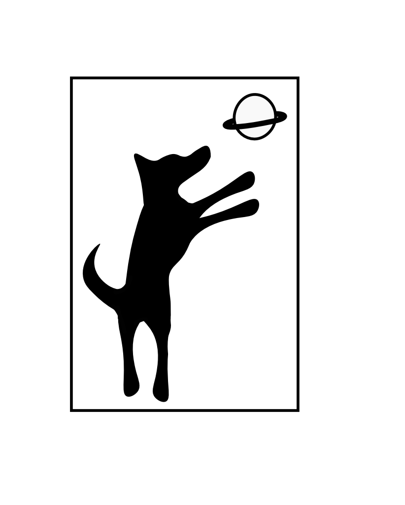
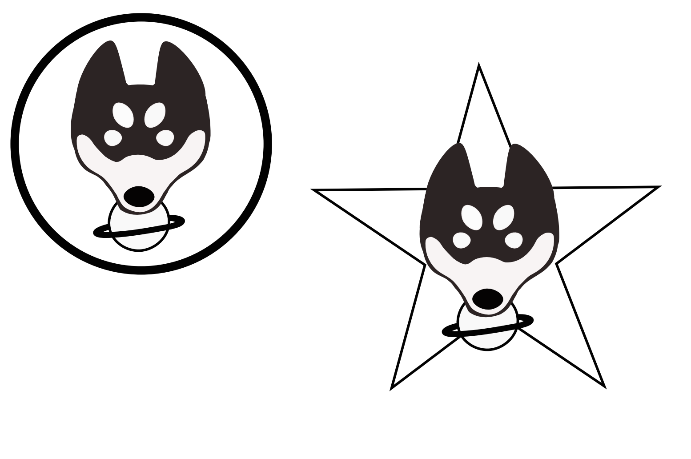

Hello, my name is Eliza Fowler. Welcome to my website!!
Project One
For this project I created a logo for the Southworth planetarium. I was inspired by space and the USM husky logo, and combined the two. I wanted this logo to look like a husky playing with Saturn as if it were a ball.
 Project Two
For this project I had to make a cryptid. I wanted to make a cat combined with an angler fish and used Adobe Photoshop to do so. The creature lures people in by meowing and pretending to be a cat, and then gobbles them up.

Project Three
For this video project I wanted to demonstrate how people are forced to grow up too fast, women especially. I used clips from the internet Archive and edited them in Adobe Premiere. I used cuts and effects to emphasize the message I wanted to convey